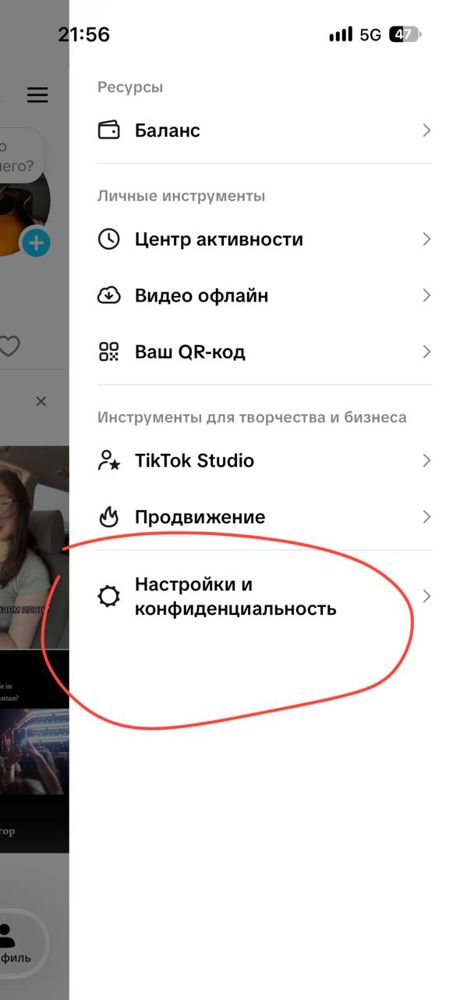
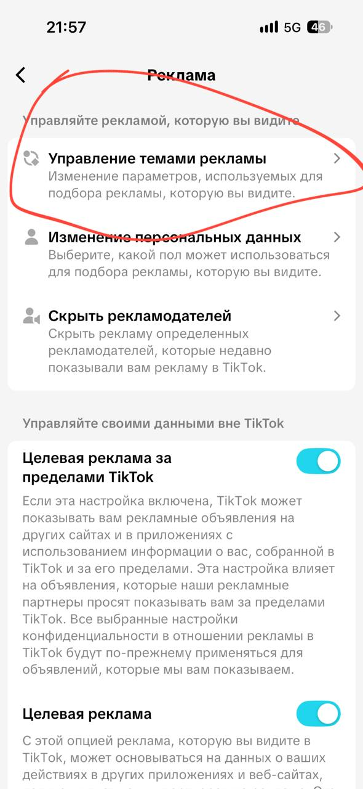
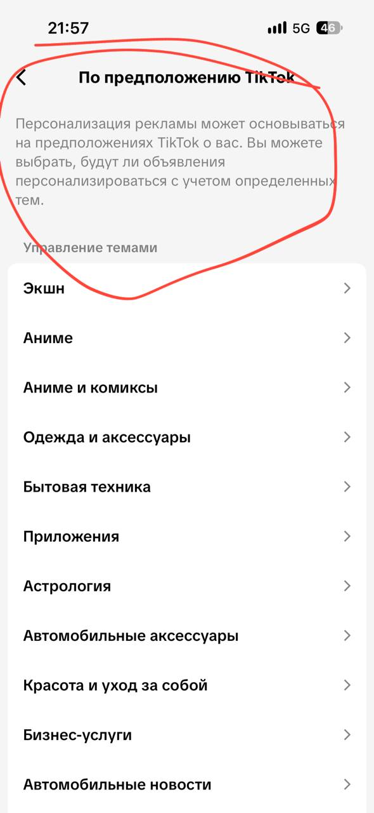

TikTok
Рекламные темы
- Открой профиль, затем меню ☰ и "Настройки и конфиденциальность"
- Выбери "Реклама", затем "Управление темами рекламы"
- В разделе "По предположению TikTok" нажми "Показать все"



Лента "Для вас"
В настройках открой "Предпочтения контента". В "Управлении темами" можно настроить частоту показа разных тем. Если хочешь начать подбор заново, выбери обновление ленты "Для вас".
Темы рекламы и настройки ленты находятся в разных разделах. Справка TikTok ↗